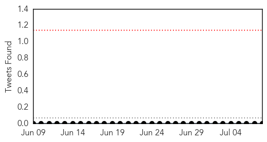
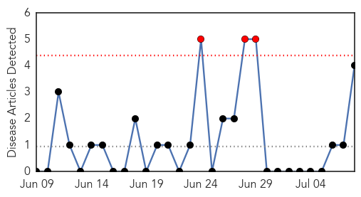
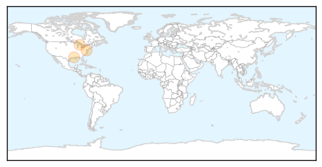

Meningitis
30-Day Web Trend
3 alerts, 0 warnings

30-Day Twitter Trend
0 alerts, 0 warnings

Article Locations

Article Confidences

Top Articles:
- 0.993
- Zambia: Meningococcal meningitis outbreak in Kabompo High School kills three
- 0.966
- Quarantine rules for Haj pilgrims unveiled
- 0.963
- Quarantine rules for Haj pilgrims unveiled
- 0.912
- Child is critically ill after swimming in Pope County lake
- 0.902
- No more cases of meningitis reported following Michigan child's death
- 0.863
- Zambia National Broadcasting Corporation
- 0.842
- Teens Most At Risk From New Lethal Form of Meningitis
- 0.766
- Boy Contracts Rare Amoeba Brain Infection After Swimming In Lake
- 0.687
- Child develops symptoms of infection after swimming in Minnesota lake
Top Tweets:
-
No tweets found for Jul 08, 2015
Pertussis
30-Day Web Trend
3 alerts, 0 warnings

30-Day Twitter Trend
0 alerts, 0 warnings

Article Locations
Article Confidences
Top Articles:
Top Tweets:
-
No tweets found for Jul 08, 2015